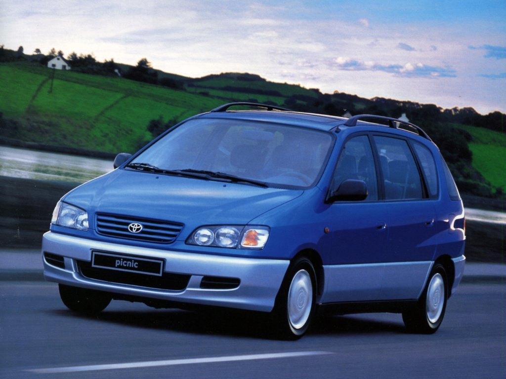
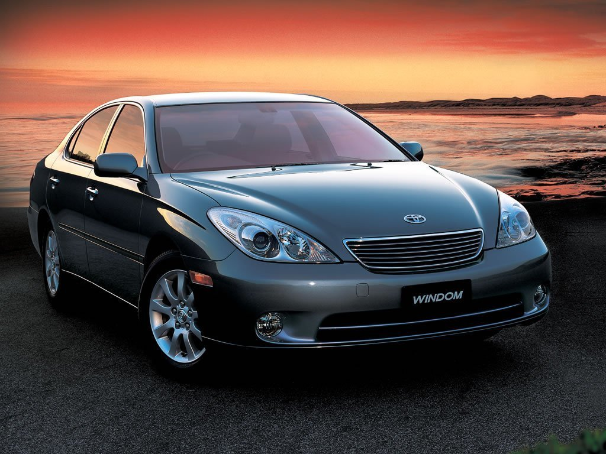

Как сэкономить на бензине?

Регистрация Помощь
Если форум не доступен с нами можно связаться через Telegram, Facebook и Twitter
Внимание: мошенничество! — уведомление о выигрыше по e-mail
Отменят ли Green Card Лотерею?
Если вы выиграли в лотерее DV-2021, не забудьте отметиться здесь!
Форум Справка Календарь Опции форума Все разделы прочитаны Навигация Руководство сайта Правила форума Дневники Что нового? Справка Группы Знакомства Форум-Wiki Donate Работа Расширенный поиск Форум Мир вокруг нас. Техника в Быту. Автомобили. Как сэкономить на бензине?
Показано с 1 по 10 из 365
Тема: Как сэкономить на бензине?
Опции темы
Версия для печати Подписаться на эту тему… 11.04.2012 #1 Malwiena Просмотр профиля Сообщения форума Записи в дневнике Просмотр статей Гражданин Регистрация 15.02.2009 Адрес Chicago Возраст 34 Сообщений 1,179 Спасибо 752 Сказали 1,500 раз в 375 постахКак сэкономить на бензине?
Никогда раньше не задумывалась на эту тему. Ездила немного, в начале недели заправлю на 30 долларов, или муж на выходных заправит и нет проблем до следующей недели.
Случилось так, что мне пришлось выйти на работу. То есть я и раньше работала, но из дома, а теперь надо каждый день в офис ездить. Дом-детский сад-работа - маршрут в 35 миль, в одну сторону. Бензин вырос в цене, машина моя пьет его литрами, средний расход - 16MPG. Как-то в трафике встала, за 10 миль показал расход 9MPG. Как на траке, елки. Получается вся моя небольшая зарплата уходит на детский сад (двое как никак) и бензин. Если с детским садом сделать ничего нельзя, то с бензином-то можно!
Первая мысль, что у меня возникла - поменять машину. Смотрю в сторону гибридов, уже хотела брать Toyota Prius, но тут муж категорически против. Даже то, что это я буду ездить на ней, его никак не уговаривает. Единственный вариант, на который он согласен - Lexus RX. Тоже гибрид, но стоит так, что мне не потянуть, да и не даст мне кредит никто, у меня за мою машину еще не выплачен. Так что продолжаю ездить на своем бензинососе, платить кредит и копить на лексус.
Теперь я учусь ездить экономно, я обнаружила, что бензина идет гораздо меньше, если плавнее жать на педаль. И если на хайвее ехать 70, а не 60 или 90, то тоже расход меньше.
Может, кто-нибудь знает хитрости, которые могут пригодиться? Вообще, от чего зависит стоимость бензина? Почему на разных заправках она разная? И в разных районах тоже? Может есть заправки, на которых бензин всегда дешевле, чем на остальных? Буду рада любым советам.
Похожие темы: Как туристу сэкономить в Нью-Йорке Ответить с цитированием 11.04.2012 Бронирование Отелей в США govorimpro.us Circuit advertisement Регистрация Always Адрес Advertising world Возраст 2010 Сообщений Many
11.04.2012 #2 Sabut Просмотр профиля Сообщения форума Записи в дневнике Просмотр статей Гражданин Регистрация 15.01.2010 Сообщений 880 Спасибо 64 Сказали 413 раз в 262 постах
Re: Как сэкономить на бензине?
Не скажу по поводу заправок, но по части расхода бензина:1. Бензин расходуется меньше, если количество оборотов на тахометре меньше. То есть, с какой бы вы скоростью ни ехали, например, 60, 70 или 90, если, условно, автоматическая коробка передач на вашей машине настроена так, что 60mph это 4 передача с 3к оборотов, 70mph это 5 передача с 1.2к оборотов, и 90mph это 5 передача с 2.5к оборотов, то расход будет меньше при 70mph, как вы и сказали. Другое подтверждение вашим практическим наблюдениям: при более плавном нажатии на педаль, передача переключается на более высокую при меньших оборотах. То есть, среднее число оборотов меньше, и расход меньше.
2. Гибриды действительно расходуют меньше бензина. Но, при движении на хайвее, разница в расходе незначительная. При этом, цена на машину гораздо дороже бензинового аналога.
К примеру, ваш любимый Rx Сейчас на сайте Лексуса, официальные данные по 2012 модели:
Бензиновый AWD: 24Mpg Hw
Гибридный: 28Mpg Hw
При ваших 35 миль в одну сторону = 70 миль в день 5 дней в неделю = 18250 миль в год.
Бензиновый израсходует 760 галлонов на 18250 миль
Гибридный израсходует 651 галлонов на 18250 миль
При средней цене в 4.2 доллара за галлон (условно, плюс-минус) за самый крутой бензин, получается, что
Бензиновый съест 3193 доллара в год
Гибридный съест 2727 долларов в год
Разница - 456 долларов в год
При официальной стоимости нового Rx Base в 40475 и RxH в 46825 (налогами можно пренебречь), получаем, что разница в цене (6350) покрывается за 13.9 лет. Сильно , неправда ли?
Даже если в формулу подставить невероятные цифры по городскому, а не хайвейному Mpg (18 у Rx против 30 у RxH), то, при тех же исходных данных, разница в цене бензина и цене машины покрывается за 3.72 года. Учитывая, что за эти почти 4 года гибридный Rx подешевеет на немного большую сумму, чем бензиновый, получается, что он обойдется вам дороже.
В общем, простая математика. Экономия гибрида - миф. Последний раз редактировалось Sabut; 11.04.2012 в 23:25 . Ответить с цитированием
Эти 6 пользователи сказали Спасибо Sabut за это сообщение::
DreamCatcher (03.05.2012), Dreamingcat (12.04.2012), Goodvix (04.01.2015), Malwiena (12.04.2012), user_lol (27.12.2014), Vasil (12.07.2012) 11.04.2012 #3 agvares Просмотр профиля Сообщения форума Записи в дневнике Просмотр статей Гражданин Регистрация 29.07.2011 Адрес TX Сообщений 506 Спасибо 21 Сказали 251 раз в 149 постахRe: Как сэкономить на бензине?
Сравнение цен на заправках gasbuddy.com Ответить с цитированиемЭти 5 пользователи сказали Спасибо agvares за это сообщение::
JenJen (27.12.2014), Malwiena (12.04.2012), marfa1 (03.01.2015), Борис. (15.01.2015), Юлик (12.04.2012) 11.04.2012 #4 Marsia Просмотр профиля Сообщения форума Записи в дневнике Просмотр статей Гражданин Регистрация 18.07.2011 Адрес США (Германия, Япония) Возраст 33 Сообщений 17,207 Спасибо 3,721 Сказали 6,380 раз в 3,704 постахRe: Как сэкономить на бензине?
Если у Вас рядом есть Sams Club, то там можно купить годовое членство (40 дол., если не ошибаюсь) и покупать продукты и бензин со скидкой. 1. Life isn't about how you survived the storm...it's about how you danced in the rain!2. Success does not come to you. YOU go to it. 3. На рус МАРСИЯ :) Ответить с цитированием
Эти пользователи сказали Спасибо Marsia за этот пост:
Malwiena (12.04.2012) 11.04.2012 #5 Partner Просмотр профиля Сообщения форума Записи в дневнике Просмотр статей Гражданин Регистрация 15.01.2007 Адрес California Сообщений 23,245 Спасибо 793 Сказали 8,863 раз в 5,269 постахRe: Как сэкономить на бензине?
Сообщение от Malwiena Может, кто-нибудь знает хитрости, которые могут пригодиться? 1. Поддерживайте нормальное давление в колесах. Наполовину спущенное колесо визуально практически неотличимо от накачанного, а расход бензина (и износ колеса) увеличивается.2. Своевременно меняйте воздушный фильтр. Забитый фильтр может значительно увеличить расход бензина.
3. Не открывайте окна на большой скорости.
4. Не включайте кондиционер без необходимости.
5. Давите на газ нежно. Резкое ускорение требует очень много бензина.
Сообщение от Malwiena Может есть заправки, на которых бензин всегда дешевле, чем на остальных? Буду рада любым советам. Самый дешевый бензин хуже качеством, и машина может потреблять его больше.
Если льёте regular - попробуйте plus. Иногда экономия по расходу может превысить разницу в стоимости бензина. Ответить с цитированием
Эти 3 пользователи сказали Спасибо Partner за это сообщение::
JenJen (27.12.2014), Malwiena (30.12.2014), Юлик (12.04.2012) 12.04.2012 #6 Alesechka Просмотр профиля Сообщения форума Записи в дневнике Просмотр статей Постоянный резидент Регистрация 18.03.2011 Адрес Minsk - Seattle Сообщений 308 Спасибо 251 Сказали 762 раз в 205 постахRe: Как сэкономить на бензине?
Мой джип тоже кушат очень много, так что тема актуальна. Помогает своевременная замена свеч, плюс мы еще недавно промыли двигатель, как результат расход поднялся по городу с 14 до 15,5. +1 к давлению в колесах. Вообще, если за машиной все время следите, то что-то сделать принципиально новое, чтобы снизить расход бензина,наверное, сложно. Что касается бензина, то где-то год назад мы делали сравнение костковского premium и шелловского plus (тогда по цене они были похожи) для нашей машины. Выезжали по одному и тому же маршруту полный бак и смотрели, что дает преимущество в милях. Я уже не помню точных цифр, но шелл тогда показал всего где-то на 1 милю больше с бака, ну может 2, чем костко. ТО есть по деньгам это было не выгодно. Must see places in Seattle в дневнике! Ответить с цитированием 12.04.2012 #7 DoopeRS Просмотр профиля Сообщения форума Записи в дневнике Просмотр статей Гражданин Регистрация 09.10.2011 Адрес Houston, TX Возраст 33 Сообщений 1,715 Записей в дневнике 1 Спасибо 1,848 Сказали 878 раз в 470 постахRe: Как сэкономить на бензине?
Сообщение от Alesechka плюс мы еще недавно промыли двигатель, как результат расход поднялся по городу с 14 до 15,5. +1 к давлению в колесах. В Непонятно в mpg или l/100km говорите. Если про первое, то не расход поднялся, а пробег... Просто акцентирую, чтоб не вводить окружающих в заблуждения))) Novosibirsk - Wroclaw - Houston - ??? Ответить с цитированием 12.04.2012 #8 ziv Просмотр профиля Сообщения форума Записи в дневнике Просмотр статей Гражданин Регистрация 24.01.2006 Адрес C Сообщений 16,611 Спасибо 1,494 Сказали 6,935 раз в 3,055 постахRe: Как сэкономить на бензине?
Сообщение от DoopeRS Непонятно в mpg или l/100km говорите. Если про первое, то не расход поднялся, а пробег... Просто акцентирую, чтоб не вводить окружающих в заблуждения))) Не вводите окружающих в заблуждение, в америке не считают расход в l/100km Ответить с цитированием 12.04.2012 #9 DoopeRS Просмотр профиля Сообщения форума Записи в дневнике Просмотр статей Гражданин Регистрация 09.10.2011 Адрес Houston, TX Возраст 33 Сообщений 1,715 Записей в дневнике 1 Спасибо 1,848 Сказали 878 раз в 470 постахRe: Как сэкономить на бензине?
Сообщение от ziv Не вводите окружающих в заблуждение, в америке не считают расход в l/100km Потому и спросил, так как Alesechka неоднозначно указала данные. Просто если расход вырос, а цифры при этом измненились с 14 на 15, то это нефига не MPG. Novosibirsk - Wroclaw - Houston - ??? Ответить с цитированием 12.04.2012 #10 Xodja Просмотр профиля Сообщения форума Записи в дневнике Просмотр статей Гражданин Регистрация 15.04.2011 Адрес Naharia, Israel Возраст 47 Сообщений 13,679 Спасибо 6,915 Сказали 8,071 раз в 2,922 постахRe: Как сэкономить на бензине?
Booking.com Сообщение от Sabut Не скажу по поводу заправок, но по части расхода бензина:В общем, простая математика. Экономия гибрида - миф. Экономия гибридов это не миф. Если говорить о топливе.
Но как Вы правильно заметили - для кармана это чувствительно только при
очень большом ежедневном пробеге.
Добавлю еще что батареи в гибридах живут в лучшем случае 7-8 лет. И их замена
может стоить больше чем сама стоимость машины.
Сам езжу на сивике гибридном 140 миль в день. Без кондера расход 50 мпг, при том что
40 миль по городу 100 по хайвею. С кондером сейчас просел немного - где-то 48 мпг.
И это еще учитывая убитую батарею - машина 2004 года. Ответить с цитированием
Эти пользователи сказали Спасибо Xodja за этот пост:
Malwiena (12.04.2012) Предыдущая тема | Следующая темаИнформация о теме
Пользователи, просматривающие эту тему
Эту тему просматривают: 1 (пользователей: 0 , гостей: 1)
Visitors found this page by searching for:
бензин govorimpro.us
,prius
,хитрости
Социальные закладки
Социальные закладки
GoogleВаши права
Вы не можете создавать новые темы Вы не можете отвечать в темах Вы не можете прикреплять вложения Вы не можете редактировать свои сообщения BB коды Вкл. Смайлы Вкл. [IMG] код Вкл. [VIDEO] код Вкл. HTML код Выкл.Правила форума
Форум "Говорим про Америку" Форум "Говорим про Америку" Facebook Обратная связь Говорим про Америку Архив Условия использования DV Lottery Green Card Вверх Текущее время: 08:56 . Часовой пояс GMT -5. Powered by vBulletin® Version 4.2.5
Copyright © 2020 vBulletin Solutions, Inc. All rights reserved.
Перевод: zCarot
